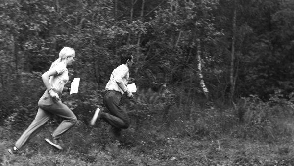

The History of Orienteering
The term Orienteering was used by military Scandinavians since 1886 and designated "movement with a map and a compass in an unfamiliar terrain." By 1895 orienteering competitions were held among the army units of the United Kingdom of Sweden and Norway.
The first civilian orienteering competitions were held by a sports club near Oslo on October 31, 1897. The winner of these competitions at a distance of about 15 miles along the rough terrain with three control points spent 1:47:07 on her passing.
But the truly sporting, competitive orienteering has been computed since 1918, when the president of the Stockholm Amateur Athletics Association, Major Ernst Killander, came up with a new kind of competition - crosscountry, in which athletes at a distance were offered to choose their own way of movement.
Major Killander does not stop at this, but develops deeper orienteering ideas, introducing his main principles - the rules of organizing competitions, the types and parameters of distances, the choice of intermediate and main milestones for setting control points, age categories, etc. Therefore, Ernst Killander can be considered the godfather of orienteering. In 1923, Sweden held its first regional championship for the first time. And among the women, the first orienteering competitions were held in the vicinity of the city of Goteborg in 1925.
The first maps in orienteering were black and white, usually on a scale of 1: 100,000, i.e. 1 cm on the map corresponded to 1 km on the terrain. Maps specially drawn for competitions and training in orienteering were printed for the first time only in 1952.
Compasses used by athletes in these competitions were made in the form of wristwatches or more accurate, placed in special boxes of wood. By the thirties of this century, sport orienteering was firmly established in Norway, Sweden and Finland. In 1932, near the city of Oslo, the first international match is held, in which Norway wins against Sweden.
By 1934, orientation has gradually spread in other European countries: Hungary, the USSR, Switzerland. In 1960, seven European countries participated in international competitions organized and held in the vicinity of Stockholm.